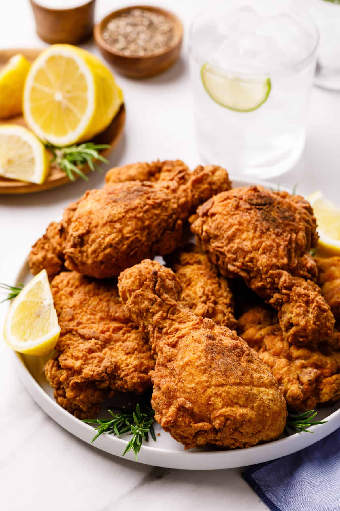
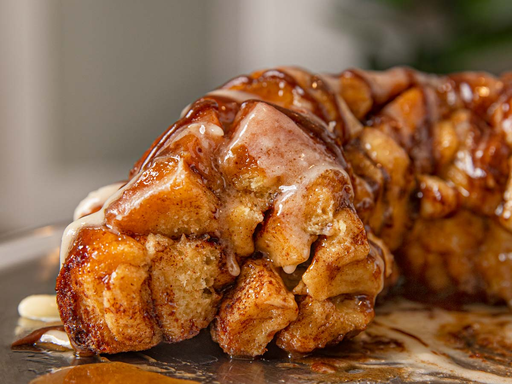

Fettuccine Alfredo
How to Make Fettuccine AlfredoYou'll find a detailed ingredient list and step-by-step instructions in the recipe below, but let's go over the basics: Fettuccine Alfredo Ingredients These are the simple ingredients you’ll need to make this fettuccine Alfredo recipe:
How to Make Homemade Fettuccine Alfredo
|

|
Fried Chicken
What Makes This Fried Chicken So Crispy?There are a few reasons this crispy fried chicken works so well:
Crispy Fried Chicken Ingredients Here's what you'll need to make the best, crispiest fried chicken of your life:
Chicken
How to Make Crispy Fried ChickenYou'll find the step-by-step recipe below, but here's a brief overview of what you can expect when you make this crispy fried chicken:
Make the Breading
Dredge the Chicken |
 |
|
Fry the Chicken For More Details. Click Here. |
Cinnamon Roll Monkey Bread
|
This ooey-gooey cinnamon roll monkey bread is devoured every time I make it for breakfast. Refrigerated rolls are quartered and dipped in melted butter and cinnamon sugar so they don't combine when baked and are easy to pull apart when you serve. It's a very creative way to use a can of cinnamon rolls! Cinnamon Roll Monkey Bread Ingredients These are the simple ingredients you’ll need to make this recipe:
Directions
Step 1
|

|